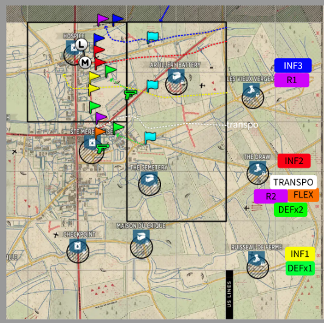
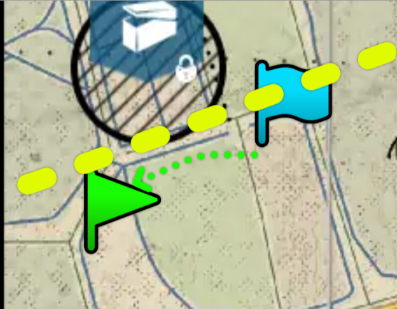

03 · Apartado
Leer la jugada en el mapa, el arranque, y qué hacer después del punto medio. Acá vuelve a entrar tu color.
Leer el stratsketch
El color de tu grupo + la bandera de OP te dicen a dónde ir.
Símbolos

Una línea verde punteada que va de una bandera de garrison a un OP verde de defensa significa que ese escuadrón de defensa construye esa garrison. Si sos infantería de defensa: tras poner nodos, pasás a Soporte para darle supplies a tu SL. Si tenés que gritarle al que agarró el soporte para que suelte los supplies, gritale: retrasar una garrison inicial es la diferencia entre recapturar el medio rápido y comerte un 4-1 en los primeros 10 minutos.

Aperturas


Desarrollo de la partida
El plan general para después del inicio, según cómo salió el punto medio.
En 3-2 / 2-3 los grupos de INF ya no tienen banderas de OP: tienen bloques de su color. Ese recuadro es tu área de control — defendela o avanzá hacia el próximo punto. Los recuadros y círculos verdes son de la defensa. Las garrisons en 3-2 son de todos, pero normalmente las construye la defensa.